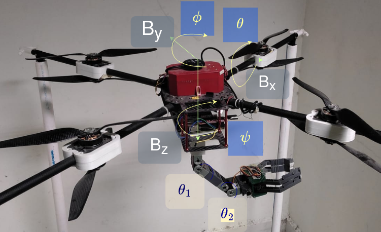
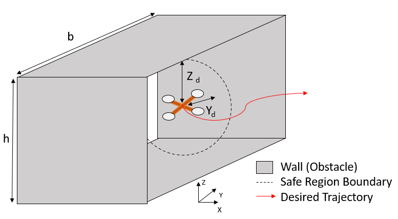
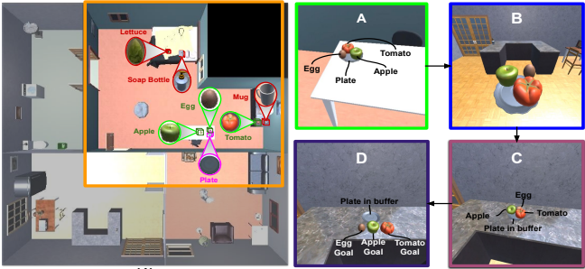

|
Vedant Mundheda I'm a second year Master of Science in Robotics student in the Robotics Insitute at Carnegie Mellon University in Pittsburgh. I work with Professor Jeff Schneider on AI for Autonomous Systems. My research interests are in Reinforcement learning, Generative AI, and Foundation Models. At CMU, I have been working on enhancing PPO for long-horizon planning in off-road autonomous driving using teacher-guided Reinforcement Learning. I also deploy RL algorithms on real-world robots to perform varied tasks. At IIIT, I worked with Dr. Harikumar Kandath and Prof. Madhava Krishna on control of aerial manipulators focusing on safety. |

|
ResearchMy research focuses on developing generalizable robotic systems that can adapt to diverse tasks and environments, with the goal of creating intelligent robots for real-world applications. I am passionate about enhancing the capabilities of embodied agents, aiming to bring us closer to the reality of efficient and versatile autonomy. |

|
Teacher-guided Policy Optimization Off-road Autonomous Driving
Vedant Mundheda, Zhouchonghao Wu, Jeff Schneider ICML, 2025 (under review) AAAI-Workshop, 2025 preprint Modified PPO to incorporate off-policy trajectories (TADPO) to train a long-horizon driving policy in off-road environments. Leveraged a teacher-student approach to enhance exploration in challenging terrains, achieving real-time performance and improved navigation efficiency. |
|

|
Predictive Barrier Lyapunov Function Based Control for Safe Trajectory Tracking of an Aerial Manipulator
Vedant Mundheda, Karan Mirakhor, Rahul Kashyap Swayampakula, Harikumar Kandath, Nagamanikandan Govindan ECC, 2023 paper / arXiv Developed a novel controller framework for trajectory tracking of an Aerial Manipulator (AM), ensuring safe operation under unknown disturbances. The system integrates PID control for attitude dynamics and MPC with Barrier Lyapunov Function (BLF)-based constraints to avoid obstacles and maintain workspace limits, validated through high-fidelity simulations. |
|

|
Control Barrier Function-based Predictive Control for Close Proximity operation of UAVs inside a Tunnel
Vedant Mundheda, Damodar Datta K, Harikumar Kandath, ICUAS, 2025 (under review) preprint Developed a control strategy for UAVs performing high-precision tasks in narrow tunnel environments, integrating MPC with modified CBF constraints to ensure safety and efficiency. The approach reduces the safe distance from walls by 37% and decreases power consumption by 15%, validated through comprehensive simulations. |
Projects |
|

|
Multi-room Rearrangement using common sense knowledge
report Developed a POMDP-based manipulation planner for embodied agents, utilizing visual input, large language models, and deep RL to optimize object search and rearrangement in cluttered environments. |

|
Autonomous Janitorial Mobile Manipulator
news / video National Artpark Robotics Challenge: Secured second place by deploying an autonomous janitorial robot using ROS, with an end-to-end stack for perception, planning, and control. The robot performed tasks such as trash collection, wash basin cleaning, and marker detection using a novel scissor mechanism manipulator. |
Miscellaneous |
Academic Service |
Reviewer, ICLR 2025
Reviewer, IROS 2024 |
Teaching Assistant |
Robot: Dynamics and Control
UAV Design Electronics Workshop I Electronics Workshop II VLSI Design |
|
Feel free to steal this website's source code by Jon Barron. |